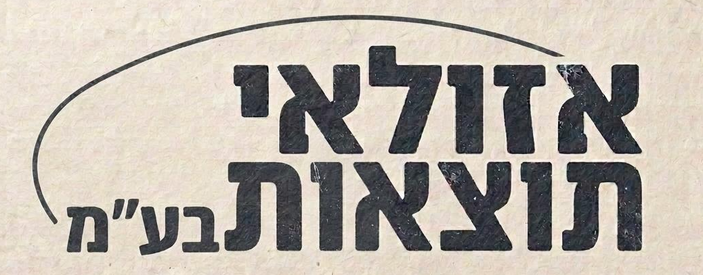

אל תצא טמבלה!
תן לאזולאי את התוצאות למלא • 50% הנחה למצטרפים חדשים
• ללא כפל מבצעים
תן לאזולאי את התוצאות למלא • 50% הנחה למצטרפים חדשים
• ללא כפל מבצעים

אוליסה עוקץ את ההייטרס:
"מי שהעדיף לשים את ברונו מלך בישולים על פניי
צריך להיבדק אצל פסיכיאטר"
במרוקו המומים אחרי ההפסד לצרפת
חכימי: ״אני לא מאמין שסידרנו לאמיר עוד
תוצאה"
שישה מנחשים מתחרים על המקום השני הנכסף ועל שני
מקומות נוספים בפודיום כאשר רק 13 נקודות מפרידות בין
שקד במקום השני לעומרי/בלומי במקום השישי.
חוץ מלפגוע בתוצאות, לכל אחד מהם קלף בשרוול שיכול
לעזור להם לזכות בכסף ואולי לגנוב אפילו את המקום
הראשון מתחת לרגליים של אמיר:
• שקד ״השנה זה שלי״ שהתחיל חזק השנה עם אוליסה מלך
הבישולים ו-mvp
• שובלי, ששקל כבר לפרוש אחרי ההדחה של ברזיל יכול
להפתיע עם ספרד כזוכה ״החברים והמשפחה הרימו אותי
וחזרתי להאמין בעצמי״
• יואב ״תוצאות זה כאן״ יוכל עם אמבפה כ-mvp יכול
להגיע גבוה אם גם יתפוס איזו תוצאה
• עומרי ״אבא חשוב״ עם אנגליה כסגנית יכול לפגוע בגמר
מושלם (ואולי גם הארי קיין mvp?)
• אזולאי תוצאות בע״מ עם קיין כמלך שערים ואמבפה mvp
כנראה יסתמך בעיקר על תוצאות. מדוברות החברה נמסר:
״הבטחתי פודיום ויהיה פודיום״
• בלומי ״it's coming home״ ללא ספק עם הניחושים
המיוחדים הכי מגוונים פה וזה יכול לבוא לטובתו או
לרעתו - עם אנגליה וספרד, סיכוי לגמר מושלם וזכייה
אנגלית על הראש של כולם. וגם - יש לו את רונאלדו כ-mvp
- לא שזה מגיע אבל גם ככה הכל מושחת בפיפ״א אז מי אמר
שאין לזה סיכוי